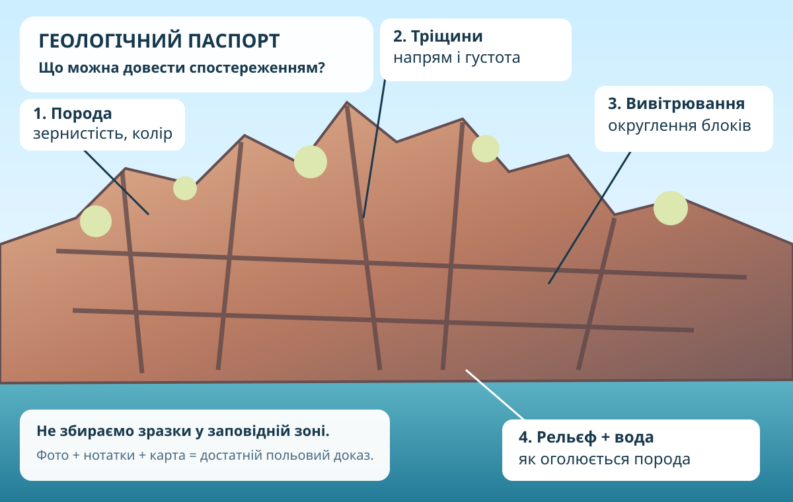

Екскурсія без «просто подивитися на каміння»
Ваше завдання: скласти короткий геологічний паспорт пам’ятки й довести, чому саме цей об’єкт вартий охорони.
Факт → місце на карті → ознака на фото/схемі → пояснення процесу. Якщо один із цих елементів випав, висновок слабшає.
Що саме охороняємо?

Геологічний заказник загальнодержавного значення «Дніпровські пороги» охоплює південну частину Хортиці, острови Байда й Дубовий та низку скель у Дніпрі. Тут охороняються виходи кристалічних порід Українського щита — переважно граніти й гнейси архейського віку.
4 ознаки, які треба побачити, а не вивчити напам’ять

Пам’ятка існує не «десь на Хортиці»
Геологічний паспорт пам’ятки
CER: чому ця пам’ятка має наукову цінність?
Одне чітке твердження: чому «Дніпровські пороги» — не просто мальовничий краєвид?
Два конкретні докази: вік/тип порід + ознака, яку можна побачити на відслоненні або карті.
Поясніть, як ці докази пов’язують об’єкт з Українським щитом і чому це обґрунтовує охорону.
Мінігеогід без ризикового «польового геройства»
Оберіть одну геологічну пам’ятку Запорізької області. Зробіть 1 слайд/сторінку: карта, реальне фото, порода або процес, наукова цінність, правила охорони, 2 надійні джерела.
Лише якщо місце доступне й безпечне: сфотографуйте природний або будівельний камінь без вилучення зразка. Опишіть колір, зернистість, тріщини/вивітрювання й сформулюйте, що з цього можна довести, а що — ні.